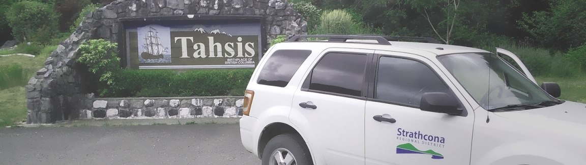

Municipality

Member Municipalities:
The SRD provides four of our five member municipalities with a service agreement for the provision of a variety of support services.
Active Service Agreements:
2021 Census Stats:
| Type | Name | Population | Occupied, Private Dwellings | % Growth (2016-2021) |
|---|---|---|---|---|
| RD | Strathcona | 48,150 | 21,227 | 7.8 |
| Electoral Area | Area A (Kyuquot/Nootka-Sayward) | 864 | 391 | 13.1 |
| Electoral Area | Area B (Cortes Island) | 1,059 | 558 | 2.3 |
| Electoral Area | Area C (Discovery Islands-Mainland Inlets) | 2,737 | 1,332 | 12.6 |
| Electoral Area | Area D (Oyster Bay - Buttle Lake) | 4,153 | 1,722 | 4.4 |
| City | Campbell River | 35,519 | 15,557 | 7.6 |
| Village | Gold River | 1,246 | 610 | 2.8 |
| Village | Sayward | 334 | 166 | 7.4 |
| Village | Tahsis | 393 | 231 | 58.5 |
| Village | Zeballos | 126 | 71 | 17.8 |